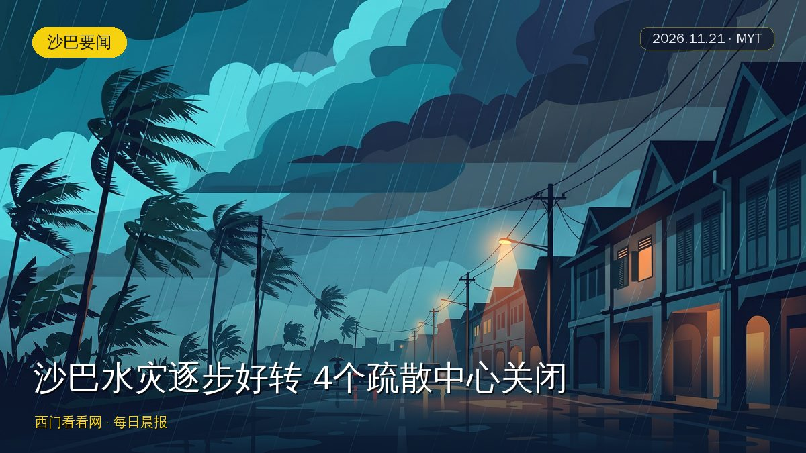
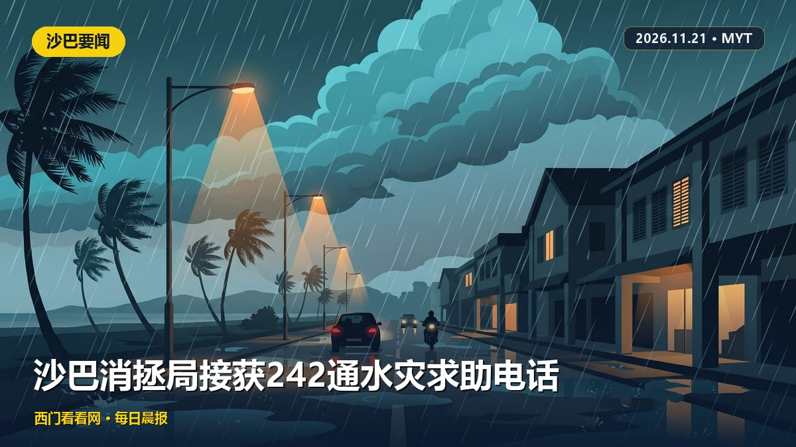
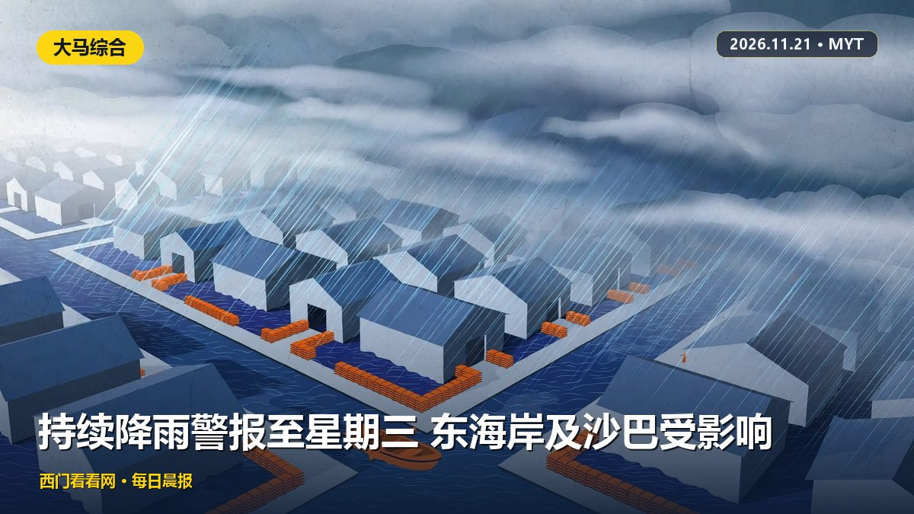
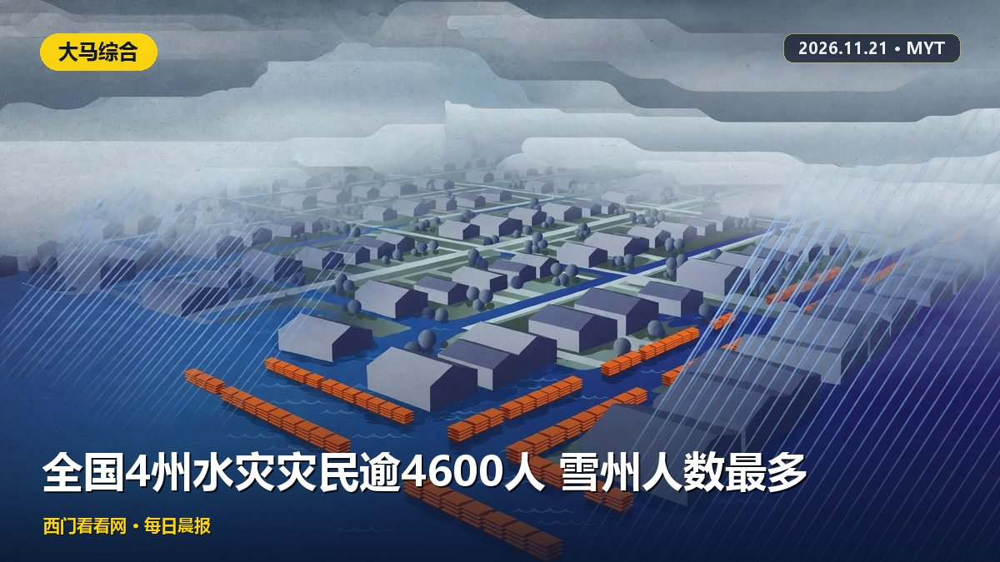

山打根27机构逾237人参与海啸演习
官方权威发布
沙巴要闻




为在沙巴的菲律宾公民提供领事服务，包括证件相关咨询与办理，请携带相关证件前往。
以传统巴刹为主题，展示沙巴各地乡村社区旅游产品与体验，推广社区旅游与地方手工艺。
美食足迹挑战活动，推广山打根作为沙巴美食之都，鼓励民众打卡品尝本地美食。
比萨亚族群文化庆典，时隔7年再度举办，包含族群文化表演与社区活动。
以猫咪为主题的路跑活动，适合一家大小参与。
半程马拉松路跑赛事，包含半马与短距离组别，适合不同程度跑者。